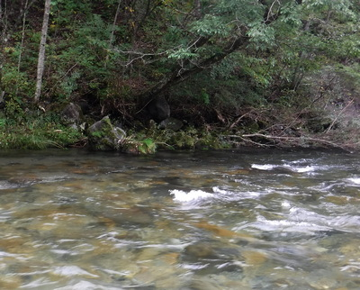
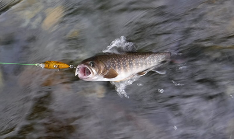
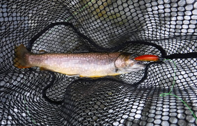
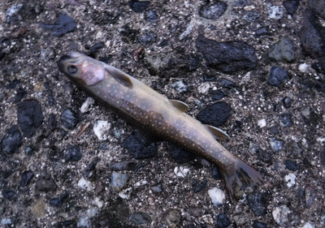

釣行日誌 故郷編
2018/09/23 ３度目の正直
９月９日、そして９月１７日と２週連続で増水に泣かされたので、２回目の３連休の中日である今日こそ本当の今期最終戦だと意気込んで家を出発する。途中、まさかの高速道路自然渋滞に引っ掛かり、およそ１時間ほど遅れてインターチェンジを降りる。
途中のコンビニで今日はお握りを３個買い、例によって走り出す前にすべて包装を開けて海苔を巻き、いつでも手に取って食べられるようにしてシート間のスペースにレジ袋を敷いて置いた。峠越えの道路に入ってから持参した麦茶を水筒から飲みつつ、運転しながらお握りを頬ばってお昼御飯とする。
さて、今日はこれまでと異なり、長年叔父と一緒に通って拾い釣りを続けて来たがこれまで未踏の区間を攻めてみようと思い、事前に国土地理院の電子地図を閲覧して念入りに調べた入渓ポイントを目指す。上記の電子地図では、長年愛用してきた紙の1/25,000地形図よりもさらに拡大して画面表示ができる。それを見ながら計測ツールを使い、入渓予定点と脱渓予定点間の距離を細かな折れ線を結びつつ計ると、画面上に赤い点線と距離が表示される。そこで、画像キャプチャーソフトを使い、必要な部分を選択してお好みの画像ファイル形式で保存し、カラープリンタでA4の紙に印刷すれば、実に詳しい自分だけの釣り用地図が出来上がる。さらにGoogle マップも別ウィンドウで並べて開いて、該当エリアの航空写真を目いっぱい拡大して表示し、地理院の電子地図と照合すれば、かなりの情報が得られるのだ。便利な世の中になったものだと感心する。
で、今日の入渓予定点であるが、いつもの里川が開けた集落から山あいに入り、両岸に道路が無く、ちょっと見ではわかりづらい区間を攻めようと、農道脇の空き地に車を停め、いったん歩いて幹線道路へ出てから、再び未舗装の狭い農道というか林道を通って渓に降りるというプランである。まぁ誰しも考える事は同じで、前人未釣の楽園のような区間はあり得ないだろうが、それでもこれまでの叔父と僕のように、車で移動しながら見えるポイントだけの拾い釣りをしていては絶対に見つけられない場所であろうから、少しは期待が持てる。
時刻は午後１時前。9月も末だというのに暑い日差しの中、いそいそと釣り支度を整える。金曜の夕方に釣具屋に念のために電話してみたら、9月9日に折れてしまった新品ロッドが修理され戻って来ているとのこと。これはラッキーと思い、いったん帰宅して、ロッドケースをバイクのハンドルに結わえて取りに行き、初期不良であったとのメーカー判断で、両ピースとも無料で新品になって帰って来たエゲリアを継いでリールを装着する。そしてジップロックに入れた地図を見ながら歩き始める。急な農道を登っていくと、10分ほどで汗ばんでくる。川へ降りて行く林道はすぐに見つかり、小さな沢に沿って急勾配で下ってゆく。両側に茂る木立に覆われて砂利道の上は薄暗く、思わずクマ避け笛を吹く口に力がこもる。
20分ほど歩いて来ると、川のそばには田んぼが数枚広がっており、まだ稲刈りは済んでいない。なだらかな土手から葦原を踏み分けて岸辺に出る。少し上流に枝の被さった深瀬が見えたので、そこから攻めることにする。今日も増水気味で、平常時より15cmくらい水位が高いようだった。
だらりと水面まで垂れ下がった小枝の下にドクターミノー5F赤金を投げ込もうと試みるが、なかなか飯田氏のDVDのようには行かない。ロッドが良くても腕が付いていかないのだ。（笑） 特にフォアハンドのサイドキャストから低い弾道でカバーの下にルアーを投射することが出来ず、ついつい癖になってしまった力の入りづらいバックハンドキャストを使ってしまう。サミングも微妙な調整が下手で、ガクンと止まる急ブレーキになる。まだまだ鍛錬が必要だなと思い知らされつつ釣りを続ける。
最初の深瀬では何も起こらず（実際は、魚の居るところにルアーを通せなかっただけかも.......）、振り返って下流を目指す。
荒い流れの瀬の中を、転ばないよう気を付けて歩み下って行くと、対岸に暗ぼったい淀みが見えた。イワナの好ポイントである。

フローティングミノーを投射し、ラインが主流に落ちて流されないようロッドティップを高く掲げて保持しながらベールは起こしたまま糸を送り出してポイントまで流し込む。トゥイッチを２回入れた瞬間に水しぶきが上がった。ゴツンというショックの後、流れに乗ってなかなかの抵抗を見せる。まずまずの大きさだった。満足の１尾。

今度はもう少し奥の苔むした丸石の際に入れてから流して水面に被さっている小枝の下まで送り込んでからリーリング。瞬間、ロッドが重くなり、合わせると激流の中で捻転が始まる。さっきのよりは大きそうだ。川の真ん中に立ち込んで釣っているので、バラさないよう慎重に遊ばせてから寄せる。ネットですくうとよく太ったコンディションの良い25cm級だった。復帰した新品ロッドの釣り味も良く、実に気分がいい。

果たして３尾目のドジョウは居るのか？と思いつつもう一度小枝の下を流すとまたまたヒット！ 同じクラスの手応えだったが、荒瀬の中での取り込みを焦ってバラす。実に悔しい。しかし、入渓した途端に良型３尾から挨拶があったので、気を良くして快調に釣り下る。
同じような両岸の木陰、石裏の弛み、出くわした低い堰堤下の淵など、次々と好ポイントが続くがなぜか反応が無くなった。当初の計画では、右岸側をず～っと下って行くはずだったが、車から歩いて来た時の林道に沿って流れていた小沢が合流するあたりは切り立った崖になっており、通過は不可能だった。仕方ないので低い堰堤のコンクリート上を、速い流れに気を付けながら左岸側に渉る。堰堤下は洗掘防止のためにコンクリートが張られていて淵が無い。唯一左岸の端にほんの小さなポケットがあったので、そこにミノーを落としてわずかな距離を引くがやはり反応は無い。
小沢の出合いには大岩が積み重なって、暗緑色の深みがある。
『あそこには居るはずだ.......』
狙いすまして放り込み、わずかに沈めてからロッドをあおる。リーリングを始めると、深みを泳ぎ出したミノーが主流に入り、抵抗を受けて激しくウォブリングし始める。そのまま保持して半円形を描かせつつ川を横断させる。足元の石裏まで気を抜かずに引いてくる。沈黙。
『あれぇ～？ あそこに居なけりゃどこに居る？ってなポイントだがなぁ.......』
その下流にも見事な淵があるが、魚影の動きも見られない。
淵に続く長い瀬を攻めつつ下ってくると、遠くにレンタカーの屋根が見えた。
「ああ、ようやく帰って来たか」
少し安心して、広がった瀬尻を右岸に渉ってから、二股別れの水量の多い方に向かう。古いブロック護岸沿いにいかにもイワナの潜んで居そうな細長の淵があるが、ここでも音なしであった。
『ううむ。ここらは道路から近いから、みんなにしょっちゅう攻められているのかな？』
と、無反応の理由を作りながらさらに釣り下る。倒木の沈んだ難しい深みがあり、シンキングミノーを引っかけないよう細心の注意を払いつつ投射してジグのように操作してみるが、何も起こらない。
『こりゃダメだ！』
二股流れが合流する場所から下流の右岸側は、高いブロック積み護岸がはるか下流まで続いている。左岸に渉るのは今日の水量では無理である。そこから先は、また来シーズンの宿題として、車に戻って移動することにした。ブロック積み護岸の切れ目には岩組みがあり、楽に田んぼまで上がることが出来た。リヤハッチからロッドを車中に入れ、ベストをいったん脱いでシートに座り、冷たい麦茶を飲むと、ほっと一息休まった。来年はぜひまたこの区間を攻めてみよう。時間があればさらに上流の「カーブの淵」からここまで釣り下るのもアリだな.......。
腕時計は午後３時を回っている。車を出して田んぼの横から農道に戻り、国道を上流方向に走る。次なる狙いは先週３連発（小型ではあったが）した二ツ石の淀みと、橋下の堰堤及びトロ淵、そしてあの大物堰堤である。
まず「爆釣の淵」横の空き地に行ってみると、誰の車も無い。よしよし。気合いを入れて再び釣り支度をして水辺に降り立つ。叔父に教わったとおりに淵の真ん中を攻めてみるが、今日もここは沈黙のまま。用水を回って下流の荒瀬に向かい、居着き場の葦の根元を攻めるが、ここからも魚の感触は得られない。いよいよ二ツ石の淀みを狙う。先週と同じ、ヘビーシンキングミノー赤金をしつこく引き回すが、どうしたことか、１尾も当たらない。誰かに釣られてしまったのだろうか？ そこから下流は時間がかかるので見切りを付けて引き返す。葦原を横切ると用水路に出たのでそれを伝って爆釣の淵まで戻り、車に乗り込む。
今度は幹線道路から橋詰めの荒れ果てた堤防道路に車を乗り入れ、クマ避け笛を懸命に吹きつつ薄暗い森から小径を降りて河原へと出る。
誰が見ても１級のポイントである堰堤下の落ち込みだが、こちら岸の深みも対岸にあるポケットからも魚信は無い。ここも皆さんがしょっちゅう手を出しているのだろうなぁ.......と、少々弱気になりつつ橋下のトロ淵を目指す。歩いていると、ネオプレンゲーターがずり下がっていたので、膝頭の位置を掴んでグイッと上に引っ張ると、いきなりビリッと裂けた。
『ありゃァ！ やっちまった！』
膝の縫い目と普通の生地との境目で10cmくらい斜めに裂け目が走っている。安価だったが良く出来ていて重宝していた製品だったのでショックだったが、そのまま使っても特に問題は無いので、対応は後日考える事にして釣りを続ける。
長いトロ淵の頭に慎重に立ち、下流に遠投して対岸のフトン籠の際から流心、さらにこちら岸沿いの弛み、というように探ってくるがここでも反応が無い。小さいのが１尾くらい挨拶しても良い場所だったが、今日は全体的にシブかった。時刻は夕方５時を回っていた。さぁ、久しぶりに夕まづめの釣りといくか！
「クマと出逢わなかったかね？」
と、おばさんに尋ねられた空き地に今日も車を停め、だいぶ日暮れの気配が深まって来た集落の道を歩いて畑から堰堤への降り口に踏み込んで行く。もちろん笛は息が上がるほど吹き続けている。堰堤下に敷き詰められた護床ブロックに渉る前に、細い流れ込みも念のためにチェックしてシンキングミノーを振り込んでみる。改めて今日も水量が多いなと思わされる。ブロック横では何も出なかったので、流れに踏み込んでぶ厚いコンクリートブロックの上に立つ。狙うは４月に大物が飛び出してきた左岸側のブロックの陰である。十分に飛距離の出るミノーが左岸の淀みの下流端ギリギリに打ち込まれ、ちょっと間を取って沈めてから引き始める。ブロックの前はほとんど止水なので根掛かりに気を付ける。ブロック前を通り越し、主流に巻き込まれ、右岸の灌木の枝下に押しつけられたミノーが魅力的なアクションを振りまきつつリーリングされてくる。しかし川面も水中も沈黙のままだ。だんだんと暗くなってきた。
ふと気づくと、ブロック前の淀みでライズが起こる。おそらくはイワナだろう。波紋を見る限り、そんなに大きくは無いと思われたが、ライズしているイワナやヤマメをルアーで釣るのはなかなか難しいのである。おそらく連中は、水面上の羽虫だけに執着しており、水中を通るルアーには目もくれないのであろう。ならば少しでも水面に近いところを攻めてみようと、飛距離重視のシンキングから、得意のフローティングミノー赤銀に交換し、ライズの発生した場所のやや下流へと投射する。ミノーが潜行しないよう、ほとんどロッドティップのトゥイッチだけで引いてみる。淀みを通過して主流に差しかかったあたりでコツンと可愛いアタリがあった。竿を立てるとアタリにふさわしいおちゃっぴい反応が伝わってくる。
『こりゃ、放流サイズだな』
思った通り、15cmほどのイワナが白泡の中から抜き上げられた。フックを外し、濡れたブロックの上で写真を撮す。小さくとも、苦労して釣った１尾には価値があった。

あたりはすっかり夕暮れの「彼は誰れ」時となり、モノノケでも出そうな気配に包まれてきた。まぁモノノケよりもっと具体的な恐怖がうろついているのだろうが.......。今日あたりこんな頃合いまで竿を振っているのは僕ぐらいのものであろう。
なおもしつこくフローティングミノーを引き回していると、主流が右岸の枝陰にぶつかる付近でロッドが重くなる。
『おっ！ これは？』
さっきのとはひと味違う抵抗を見せて、25cm級が足元で魚影をひるがえした。
『やったね！』
思いきって抜き上げ、さっきのようにブロックの上で写真を撮そうとフックを外したら、さすがに元気が良く、いきなり身をくねらせて跳ね飛び、落ち込みの白泡の中に飛びこんでしまった。
『アア～！ ネットを使うべきだった！』
後悔先に立たず。良型の写真を取り損ねてやや落ち込んだが、シーズン最終戦の夕まづめでまずまずの型を釣ったので、すぐに気を取り直した。時刻は午後６時前。もうすっかり暗い。
ベストのポケットにタコ糸で結わえ付けてある笛を取り出し、思いっきり大音量で吹きながらブロックを降り、細い流れを渉り、畑へと続く林の中の小径を歩き始める。暗がりの向こうに黒い固まりが動いたらどうしよう！？ 左腰のホルスターに手を掛けながら急ぎ足で道路まで出る。これで一安心。
何かに憑かれたようにこの川に通ったこの夏から秋の日々を振り返り、満たされた気持ちで車のドアを開ける。急ぐ旅では無いから、帰り道はゆっくりと走ろう.......。高原の里川は、夜を迎え、橋の下から増水した流れの音だけが響いていた。
釣行日誌 故郷編 目次へ
サイトマップ
ホームへ
お問い合わせ